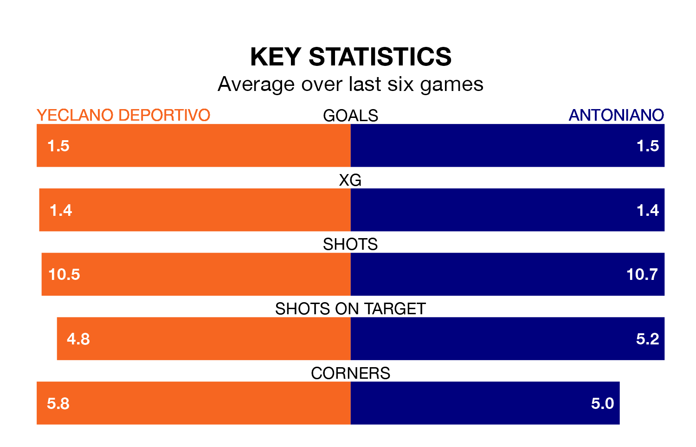

Yeclano Deportivo are heavy favourites to keep all three points at home in Sunday's late kick-off against Antoniano.
Yeclano Deportivo, who sit second in the Segunda División RFEF Group 4 with 28 games played, are priced at 1.4 to seal victory at the Estadio Municipal La Constitución.
Sitting nine places and 18 points behind them in the table, Antoniano are 7.0 to win with *Betting Company*, while the draw is at 3.7.
With 39 goals in 28 games so far this season, Yeclano Deportivo are the league's second-highest scorers with 1.4 goals per game. And they are conceding fewer than average, letting in 25 goals at a rate of 0.9 per game.
Antoniano, meanwhile, are below average scorers, with 0.9 goals per game, compared to a league average of 1.0. They have conceded 1.2 goals per game.
The home side are in mixed form in the Segunda División RFEF Group 4, with two wins and three draws from their last six games.
With three wins and a draw over that period, the visitors' form is slightly better – they have taken 10 points from 18, compared to Yeclano Deportivo's nine.
Yeclano Deportivo's last match was on March 24, a 2-1 win against Cartagena B, with José Manuel Naranjo Molina and José Ángel Ayala Hernández getting the goals for Yeclano Deportivo.
Antoniano beat Real Betis B 2-1 last time out, on March 23, with Álvaro Rivero Sánchez on the scoresheet.
Updated: 10:31 (UTC), 31/03/24